Example gallery
Every image below is generated by the actual renderer from artificial 12-lead waveforms. Browse 125 figures, filter by feature, open a full image and copy its rendering recipe. The JSON recipe records configuration, parameter overrides, seed and backend context.
The default random sampler supplies parameters that the recipe does not explicitly override. Reproduce with the same source, Torch/device context and generator seed. Bitwise output across devices or versions is not guaranteed.
125 examples

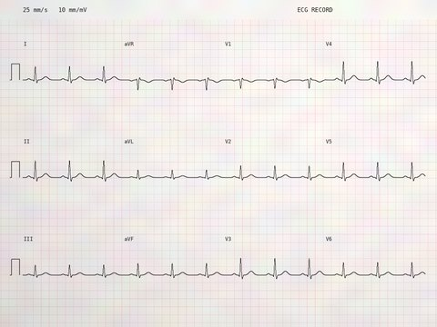
3x4#
Canonical paper view. The layout name counts rows × columns. Rhythm strips use the full recording window.

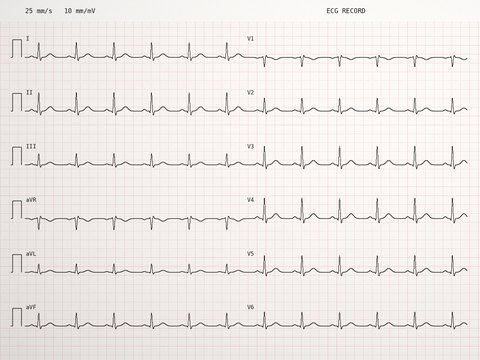
6x2#
Canonical paper view. The layout name counts rows × columns. Rhythm strips use the full recording window.

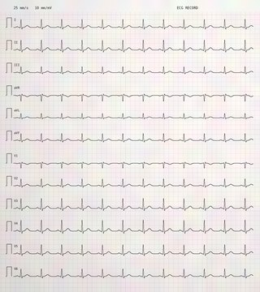
12x1#
Canonical paper view. The layout name counts rows × columns. Rhythm strips use the full recording window.

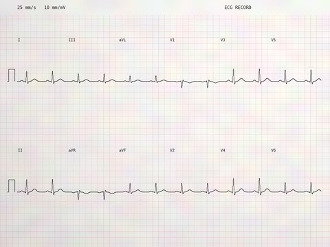
2x6#
Canonical paper view. The layout name counts rows × columns. Rhythm strips use the full recording window.

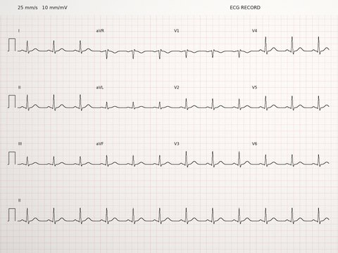
3x4+r1#
Canonical paper view. The layout name counts rows × columns. Rhythm strips use the full recording window.

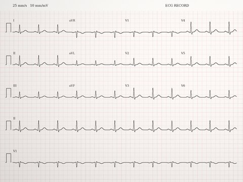
3x4+r2#
Canonical paper view. The layout name counts rows × columns. Rhythm strips use the full recording window.

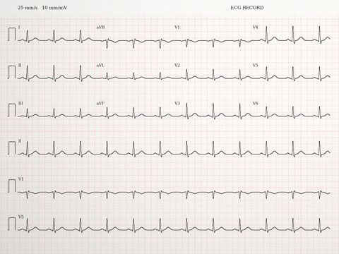
3x4+r3#
Canonical paper view. The layout name counts rows × columns. Rhythm strips use the full recording window.

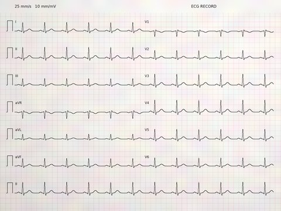
6x2+r1#
Canonical paper view. The layout name counts rows × columns. Rhythm strips use the full recording window.

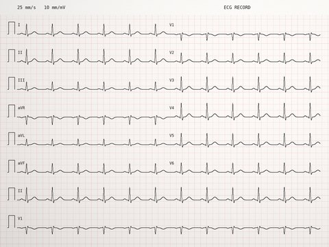
6x2+r2#
Canonical paper view. The layout name counts rows × columns. Rhythm strips use the full recording window.

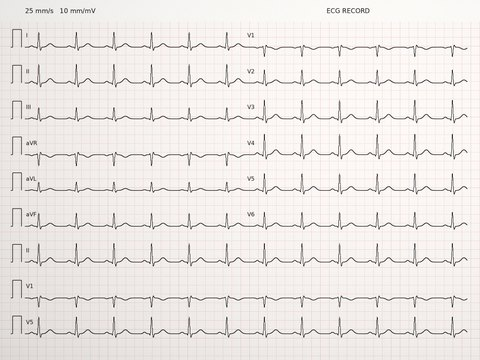
6x2+r3#
Canonical paper view. The layout name counts rows × columns. Rhythm strips use the full recording window.

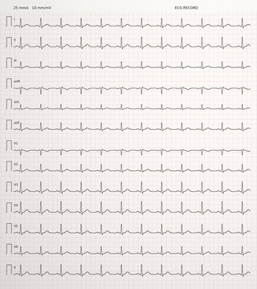
12x1+r1#
Canonical paper view. The layout name counts rows × columns. Rhythm strips use the full recording window.

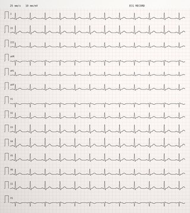
12x1+r2#
Canonical paper view. The layout name counts rows × columns. Rhythm strips use the full recording window.

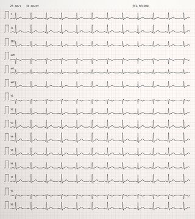
12x1+r3#
Canonical paper view. The layout name counts rows × columns. Rhythm strips use the full recording window.

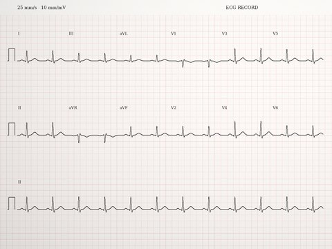
2x6+r1#
Canonical paper view. The layout name counts rows × columns. Rhythm strips use the full recording window.

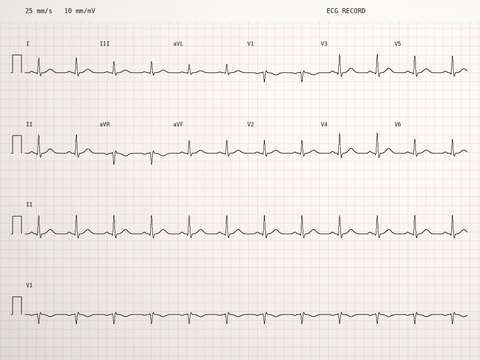
2x6+r2#
Canonical paper view. The layout name counts rows × columns. Rhythm strips use the full recording window.

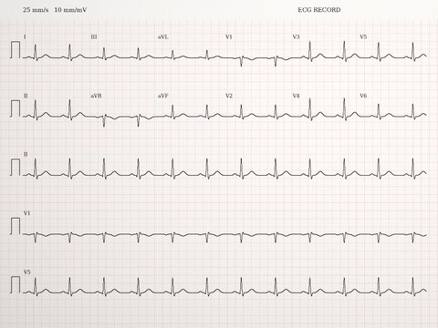
2x6+r3#
Canonical paper view. The layout name counts rows × columns. Rhythm strips use the full recording window.

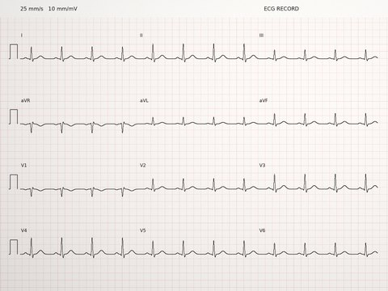
4x3#
Canonical paper view. The layout name counts rows × columns. Rhythm strips use the full recording window.

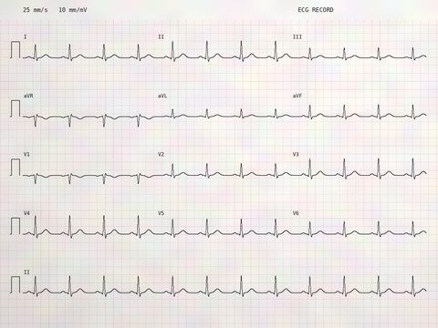
4x3+r1#
Canonical paper view. The layout name counts rows × columns. Rhythm strips use the full recording window.

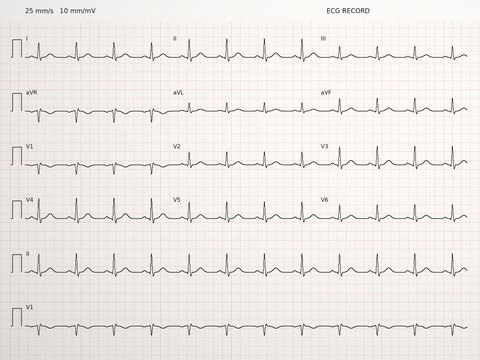
4x3+r2#
Canonical paper view. The layout name counts rows × columns. Rhythm strips use the full recording window.

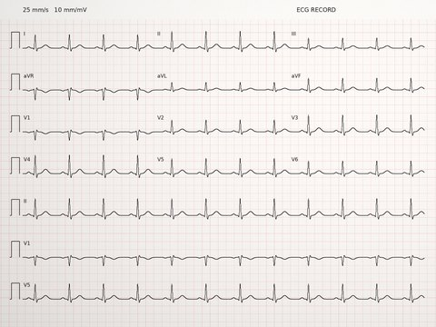
4x3+r3#
Canonical paper view. The layout name counts rows × columns. Rhythm strips use the full recording window.

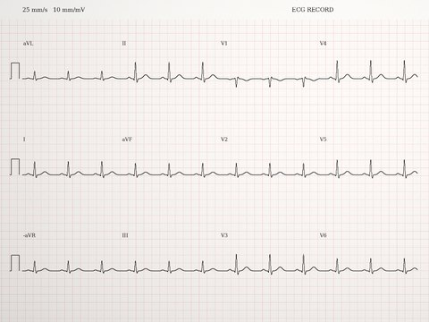
3x4-cabrera#
Canonical paper view. The layout name counts rows × columns. Rhythm strips use the full recording window.

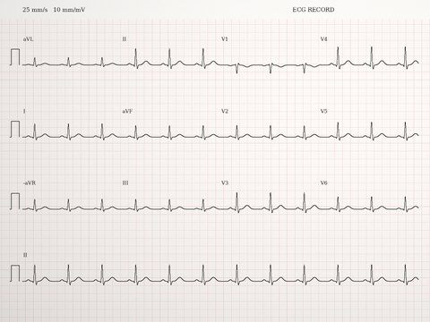
3x4-cabrera+r1#
Canonical paper view. The layout name counts rows × columns. Rhythm strips use the full recording window.

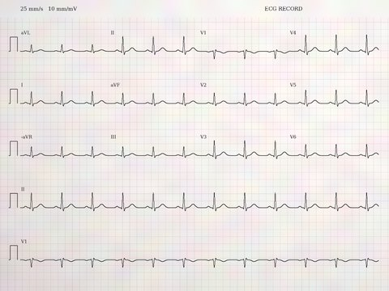
3x4-cabrera+r2#
Canonical paper view. The layout name counts rows × columns. Rhythm strips use the full recording window.

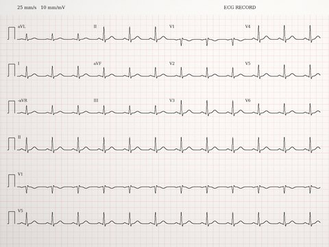
3x4-cabrera+r3#
Canonical paper view. The layout name counts rows × columns. Rhythm strips use the full recording window.

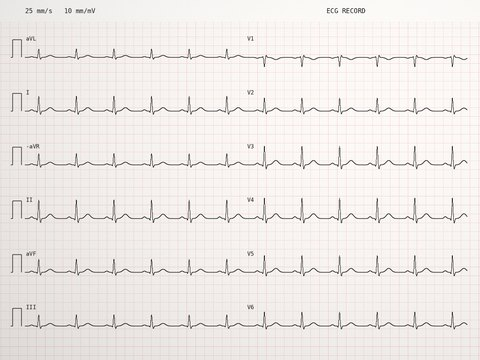
6x2-cabrera#
Canonical paper view. The layout name counts rows × columns. Rhythm strips use the full recording window.

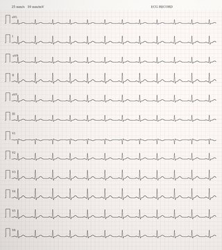
12x1-cabrera#
Canonical paper view. The layout name counts rows × columns. Rhythm strips use the full recording window.

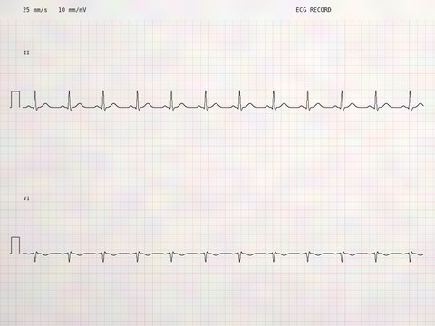
2x1-long#
Canonical paper view. The layout name counts rows × columns. Rhythm strips use the full recording window.

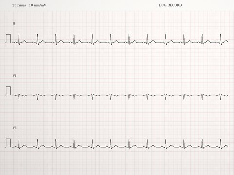
3x1-long#
Canonical paper view. The layout name counts rows × columns. Rhythm strips use the full recording window.

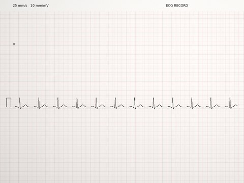
1x1-long#
Canonical paper view. The layout name counts rows × columns. Rhythm strips use the full recording window.

1x12#
Canonical paper view. The layout name counts rows × columns. Rhythm strips use the full recording window.

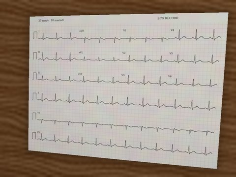
Flat#
A controlled 2.5D paper surface with coherent normals, illumination and relief projection.

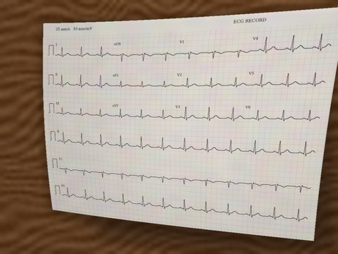
Curl#
A controlled 2.5D paper surface with coherent normals, illumination and relief projection.

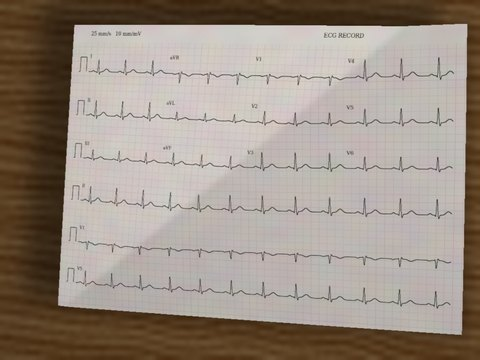
Fold#
A controlled 2.5D paper surface with coherent normals, illumination and relief projection.

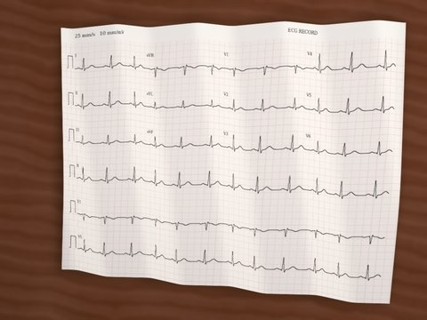
Accordion#
A controlled 2.5D paper surface with coherent normals, illumination and relief projection.

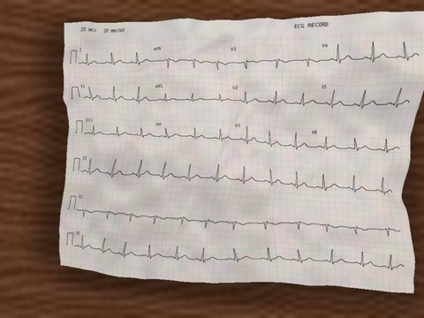
Crumpled#
A controlled 2.5D paper surface with coherent normals, illumination and relief projection.

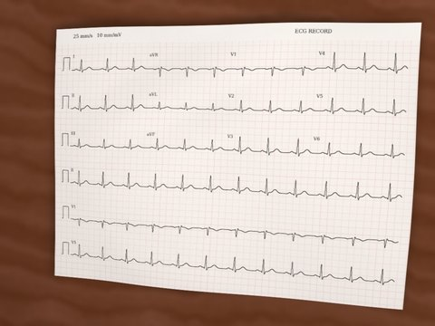
Wrinkled#
A controlled 2.5D paper surface with coherent normals, illumination and relief projection.

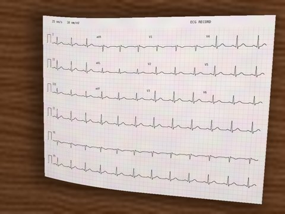
Rolled#
A controlled 2.5D paper surface with coherent normals, illumination and relief projection.

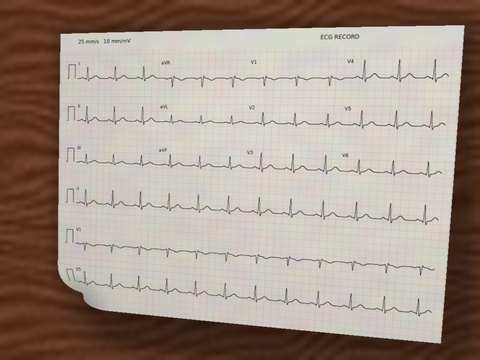
Corner#
A controlled 2.5D paper surface with coherent normals, illumination and relief projection.

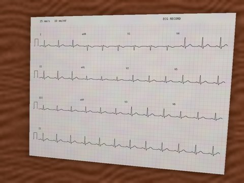

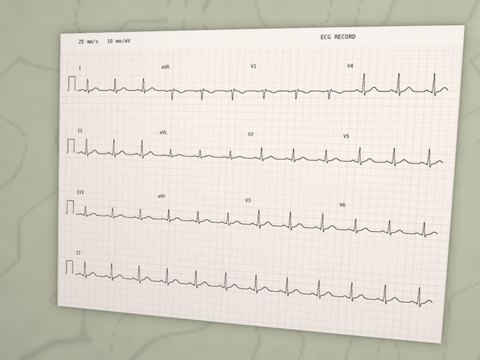

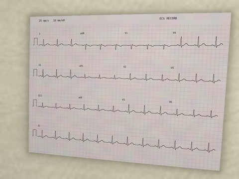

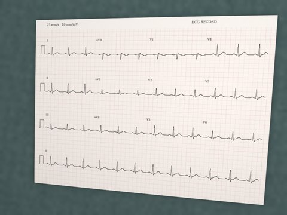

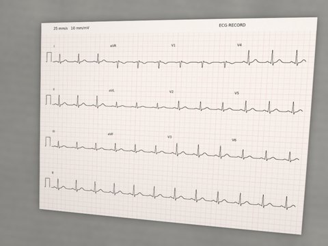

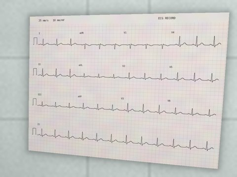

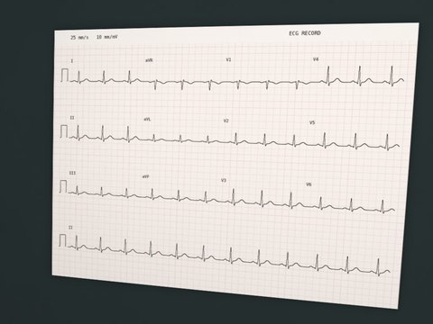

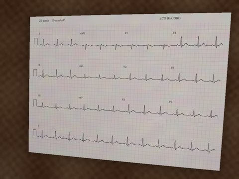

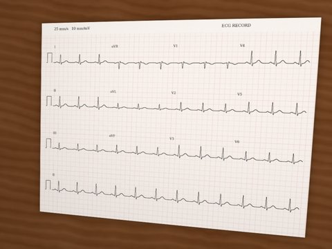
None shadow#
An analytic foreground silhouette. This is a procedural shadow, not a photographed hand or phone.

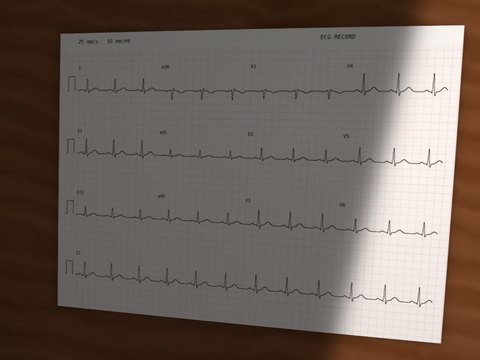
Edge shadow#
An analytic foreground silhouette. This is a procedural shadow, not a photographed hand or phone.

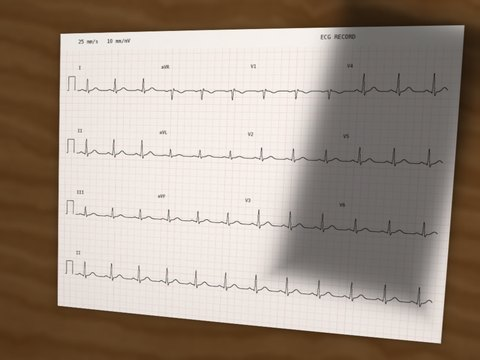
Phone shadow#
An analytic foreground silhouette. This is a procedural shadow, not a photographed hand or phone.

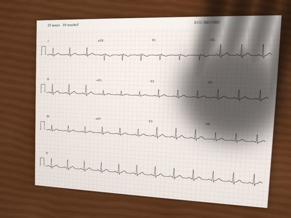
Hand shadow#
An analytic foreground silhouette. This is a procedural shadow, not a photographed hand or phone.

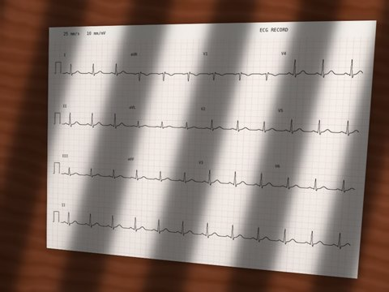
Blinds shadow#
An analytic foreground silhouette. This is a procedural shadow, not a photographed hand or phone.

Window shadow#
An analytic foreground silhouette. This is a procedural shadow, not a photographed hand or phone.

Ellipse shadow#
An analytic foreground silhouette. This is a procedural shadow, not a photographed hand or phone.


Missing lead slots#
Per-slot visibility can remove traces or labels without fabricating signal recovery.


Simultaneous columns#
Every column begins at time zero. Sequential columns instead partition the recording window.


White background, black leads#
One paired observation. Coverage excludes grid, labels and calibration pulses.

Black background, white leads#
One paired observation. Coverage excludes grid, labels and calibration pulses.

12 independent lead channels#
One paired observation. Coverage excludes grid, labels and calibration pulses.

Visible supervision support#
One paired observation. Coverage excludes grid, labels and calibration pulses.


II channel#
One paired observation. Coverage excludes grid, labels and calibration pulses.

III channel#
One paired observation. Coverage excludes grid, labels and calibration pulses.

aVR channel#
One paired observation. Coverage excludes grid, labels and calibration pulses.

aVL channel#
One paired observation. Coverage excludes grid, labels and calibration pulses.

aVF channel#
One paired observation. Coverage excludes grid, labels and calibration pulses.

V1 channel#
One paired observation. Coverage excludes grid, labels and calibration pulses.

V2 channel#
One paired observation. Coverage excludes grid, labels and calibration pulses.

V3 channel#
One paired observation. Coverage excludes grid, labels and calibration pulses.

V4 channel#
One paired observation. Coverage excludes grid, labels and calibration pulses.

V5 channel#
One paired observation. Coverage excludes grid, labels and calibration pulses.

V6 channel#
One paired observation. Coverage excludes grid, labels and calibration pulses.

Lead bounding boxes#
Pixel-edge xyxy bounds. Lead boxes aggregate repetitions. Instance boxes keep each printed occurrence separate.

Instance bounding boxes#
Pixel-edge xyxy bounds. Lead boxes aggregate repetitions. Instance boxes keep each printed occurrence separate.
No examples match this filter.